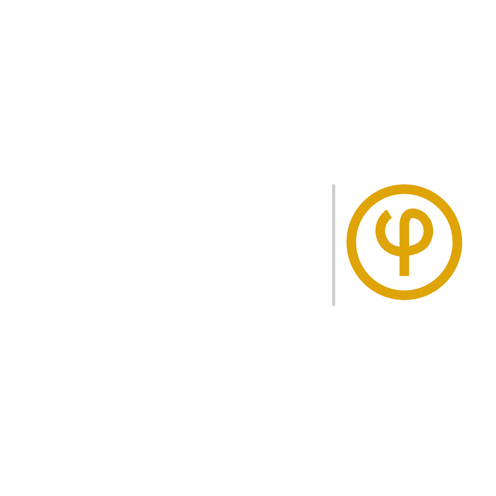

Un refugio para el dolor; un espacio para la existencia.
Duelos • Angustia • Vacío y Soledad • Ansiedad • Depresión • Suicidio • Amor y Desamor • Crisis Existencial • Finitud • Encuentro • Culpa • Estereotipos y Arquetipos • Pareja • Expectativas
Acompaño en procesos de duelo y crisis de sentido desde una perspectiva existencial. No se trata solo de superar el dolor, sino que intentemos habitar con él.
Si has llegado hasta aquí, probablemente estás buscando un espacio donde lo que te ocurre pueda ser mirado sin juzgar.
Agendar proceso Contáctame para tu primer sesión